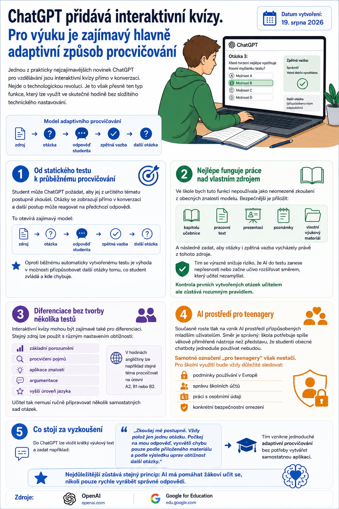

Jednou z prakticky nejzajímavějších novinek ChatGPT pro vzdělávání jsou interaktivní kvízy přímo v konverzaci.

Nejde o technologickou revoluci. Je to však přesně ten typ funkce, který lze využít ve skutečné hodině bez složitého technického nastavování.
Od statického testu k průběžnému procvičování
Student může ChatGPT požádat, aby jej z určitého tématu postupně zkoušel. Otázky se zobrazují přímo v konverzaci a další postup může reagovat na předchozí odpovědi.
To otevírá zajímavý model:
zdroj → otázka → odpověď studenta → zpětná vazba → další otázka.
Oproti běžnému automaticky vytvořenému testu je výhoda v možnosti přizpůsobovat další otázky tomu, co student zvládá a kde chybuje.
Nejlépe funguje práce nad vlastním zdrojem
Ve škole bych tuto funkci nepoužívala jako neomezené zkoušení z obecných znalostí modelu.
Bezpečnější je přiložit:
- kapitolu učebnice,
- pracovní text,
- prezentaci,
- poznámky,
- vlastní výukový materiál.
A následně zadat, aby otázky i zpětná vazba vycházely právě z tohoto zdroje.
Tím se výrazně snižuje riziko, že AI do testu zanese nepřesnosti nebo začne učivo rozšiřovat směrem, který učitel nezamýšlel.
Kontrola prvních vytvořených otázek učitelem ale zůstává rozumným pravidlem.
Diferenciace bez tvorby několika testů
Interaktivní kvízy mohou být zajímavé také pro diferenciaci.
Stejný zdroj lze použít s různým nastavením obtížnosti:
- základní porozumění,
- procvičení pojmů,
- aplikace znalostí,
- argumentace,
- vyšší úroveň jazyka.
V hodinách angličtiny lze například stejné téma procvičovat na úrovni A2, B1 nebo B2.
Učitel tak nemusí ručně připravovat několik samostatných sad otázek.
AI prostředí pro teenagery
Současně roste tlak na vznik AI prostředí přizpůsobených mladším uživatelům. Směr je správný: škola potřebuje spíše věkově přiměřené nástroje než představu, že studenti obecné chatboty jednoduše používat nebudou.
Samotné označení „pro teenagery“ však nestačí.
Pro školní využití bude vždy důležité sledovat:
- podmínky používání v Evropě,
- správu školních účtů,
- práci s osobními údaji,
- konkrétní bezpečnostní omezení.
Co stojí za vyzkoušení
Do ChatGPT lze vložit krátký výukový text a zadat například:
Tím vznikne jednoduché adaptivní procvičování bez potřeby vytvářet samostatnou aplikaci.
Nejdůležitější zůstává stejný princip: AI má pomáhat žákovi učit se, nikoli pouze rychle vyrábět správné odpovědi.
Zdroje
OpenAI · Google for Education.